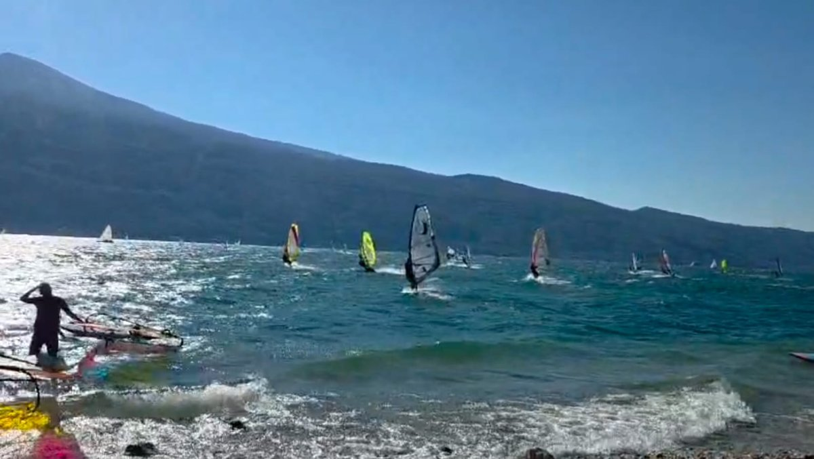
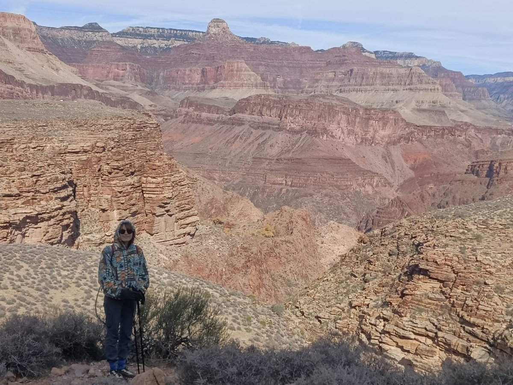

About me
My scientific career is dedicated to gravitational-wave (GW) astronomy, the study of spacetime ripples produced by accelerating objects, which offers a unique window into fundamental physics, cosmology, and astrophysics. My expertise lies in analyzing real GW data from the LIGO-Virgo-KAGRA Collaboration, as well as synthetic data expected from future GW detectors such as Einstein Telescope and LISA.
I did my PhD at Università di Trento, Italy (2020–2024), with Prof. G. A. Prodi, working to enhance the detection and characterization of GW transients with minimal assumptions on the astrophysical signals.
Since 2024, I have been a postdoctoral researcher at the California Institute of Technology, where I investigate how to robustly infer the properties of GW sources, particularly for challenging GW events such as massive black-hole binaries and GW signals overlapping transient noise.
Since 2020, I have been part of the LIGO-Virgo-KAGRA Collaboration.
In my free time, I love outdoor activities such as windsurfing and hiking.

